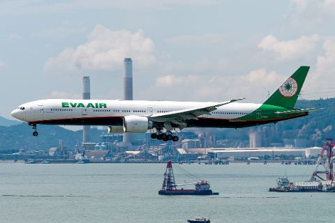

Empresa
Fundada el 8 de marzo de 1989; primer vuelo el 1 de julio de 1991. Alianza: Star Alliance (se incorporó en junio de 2013). Flota al 1 de septiembre de 2026: 89 aeronaves. Base de pilotos: Taipéi (Taiwán).
- Destinos
- 66
- Pasajeros anuales
- 13,326,018
Datos de la empresa6 cifras · Flota · Fuentes
- Fundación
- 8 de marzo de 1989
- Primer vuelo
- 1 de julio de 1991
- Alianza
- Star Alliancese incorporó en junio de 2013
- Aeronaves en servicio
- 89 aeronaves1 de septiembre de 2026
- Destinos
- 66incluye destinos solo de carga · 1 de septiembre de 2026
- Pasajeros anuales
- 13,326,0182025
Flota6 tipos · 1 de septiembre de 2026
- B777-300ER32 aeronaves
- B787-99 aeronaves
- B787-1013 aeronaves
- A330-3009 aeronaves
- A321-20017 aeronaves
- B777F (carguero)9 aeronaves
FuentesEVA Air, “Company Chronicle”EVA Air, “EVA Values”EVA Air, “EVA Air Fleet”EVA Air, “Main Business and Services”EVA Air, “Operational Data”